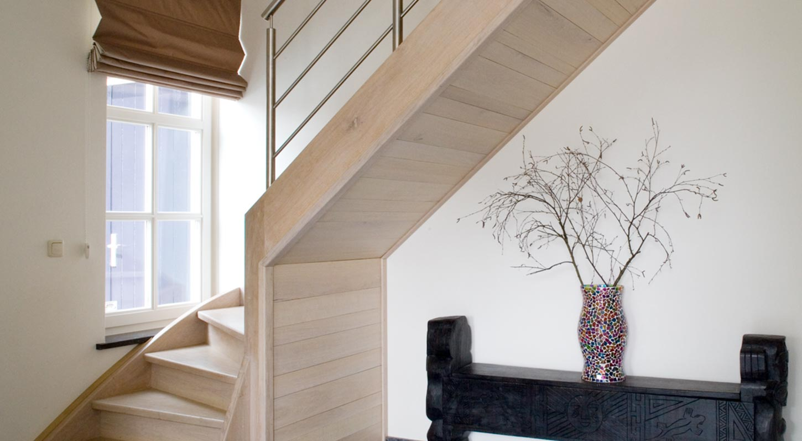
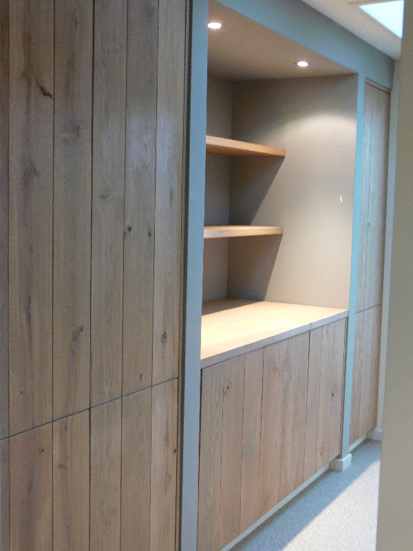

Over Grosfeld
Vakmanschap uit Weert, sinds 2001
Een klein bedrijf met korte lijnen. Wij maken houten trappen, meubels en interieurs op maat, met ambachtelijke vaardigheden en degelijke materialen.
- Opgericht
- 2001
- Werkgebied
- 30 km rond Weert
- Voor
- Particulier en zakelijk
- Werkwijze
- Afspraak = afspraak
Ons verhaal
Van hobby naar vak
Grosfeld Interieurbouw & Trappen is in 2001 opgericht door Steffan Grosfeld. Hij volgde de opleiding houtbewerking aan Sint Jan in Maaseik (België) en maakte van zijn hobby zijn werk.
Wij zijn een klein bedrijf. Daardoor zijn de lijnen kort en zijn wij makkelijk te bereiken. U heeft contact met de mensen die uw trap, meubel of interieur ook echt maken.
Wij leveren hoogwaardig maatwerk in houten trappen, meubels en interieurs voor particulieren, bedrijven en architecten. Ambachtelijke vaardigheden en degelijke materialen zijn de basis van ons vakmanschap.
Het ambacht
Hoe wij werken
Van het eerste idee tot de laatste afwerking heeft u één vast aanspreekpunt.
Eigen werkplaats
Ontworpen en gemaakt in Weert
Wij ontwerpen en realiseren al onze projecten in onze eigen werkplaats. Daar hebben wij alle benodigdheden voor houtbewerking. Zo houden wij grip op de kwaliteit en kunnen wij elk stuk precies op maat maken.
Maatwerk betekent dat elke trap en elk meubel wordt gemaakt voor die ene ruimte, met uw maten en wensen als uitgangspunt.
Materialen
Hout als basis, combinaties als kracht
Werken met mooie en verschillende houtsoorten is voor ons de basis. Elke houtsoort heeft een eigen kleur, tekening en karakter. Daarom kijken wij samen met u welk hout past bij de ruimte en het gebruik.
Ook combinaties met andere materialen zijn bij ons in goede handen:
- Staal
- Rvs
- Smeedwerk
- Glas
Voor wie
Particulier, zakelijk en architect
Wij werken voor particulieren, bedrijven en architecten. Naast trappen en interieurs voor thuis realiseren wij ook interieurs voor horeca, winkels en kantoren. Dat gebeurt in goed overleg, zodat het resultaat past bij wat u wilt.
- Trappen, meubels, keukens en kasten
- Horeca-, winkel- en kantoorinterieur
- Het inrichten van een bedrijfsbus
Stijl
Strak, klassiek, modern of landelijk
Wat stijl betreft kunt u bij ons alle kanten op. Klik op een foto om die groter te bekijken.
Werkwijze
Zo pakken wij uw project aan
Persoonlijk, overzichtelijk en met korte lijnen.
Kennismaking
U belt, mailt of vult het formulier in. Wij nemen contact met u op voor een gesprek.
Luisteren en meedenken
Wij luisteren naar uw wensen en brengen de mogelijkheden en eventuele beperkingen in kaart.
Advies en offerte
U krijgt een goed advies en een vrijblijvende offerte, zodat u weet waar u aan toe bent.
Maken en plaatsen
Wij maken uw project in onze eigen werkplaats en plaatsen het. Afspraak is afspraak.
Werkgebied
Binnen 30 km rond Weert
Ons werkgebied is voornamelijk Zuidoost Nederland, binnen een straal van 30 kilometer vanuit Weert. Zo blijven wij dicht bij u in de buurt, voor het inmeten, het plaatsen en de afwerking.
Twijfelt u of uw woonplaats binnen ons werkgebied valt? Bel of mail ons gerust.
Reviews
Google reviews

Kennismaken?
Vertel ons wat u wilt maken. Wij nemen contact met u op voor een gesprek en een vrijblijvende offerte.